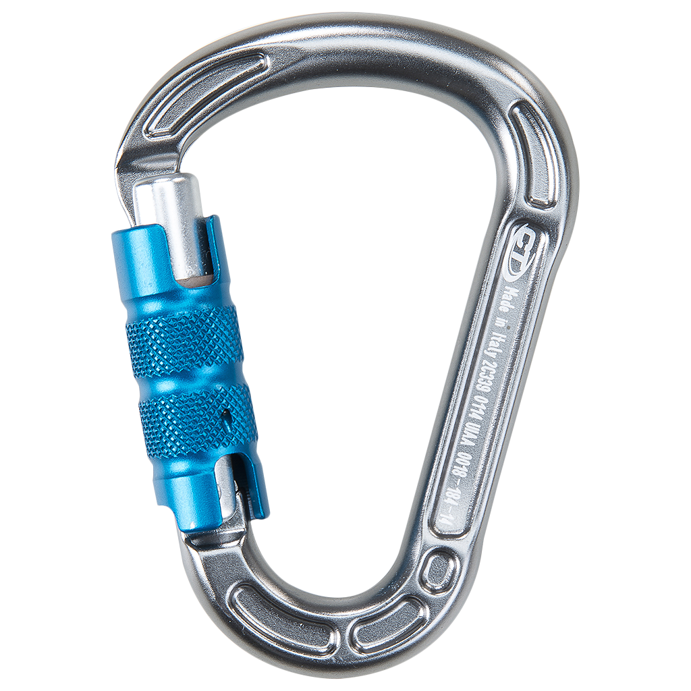
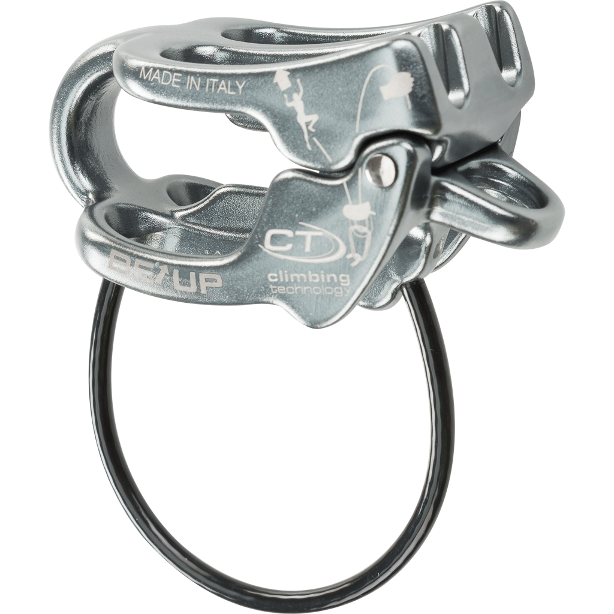
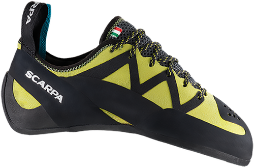
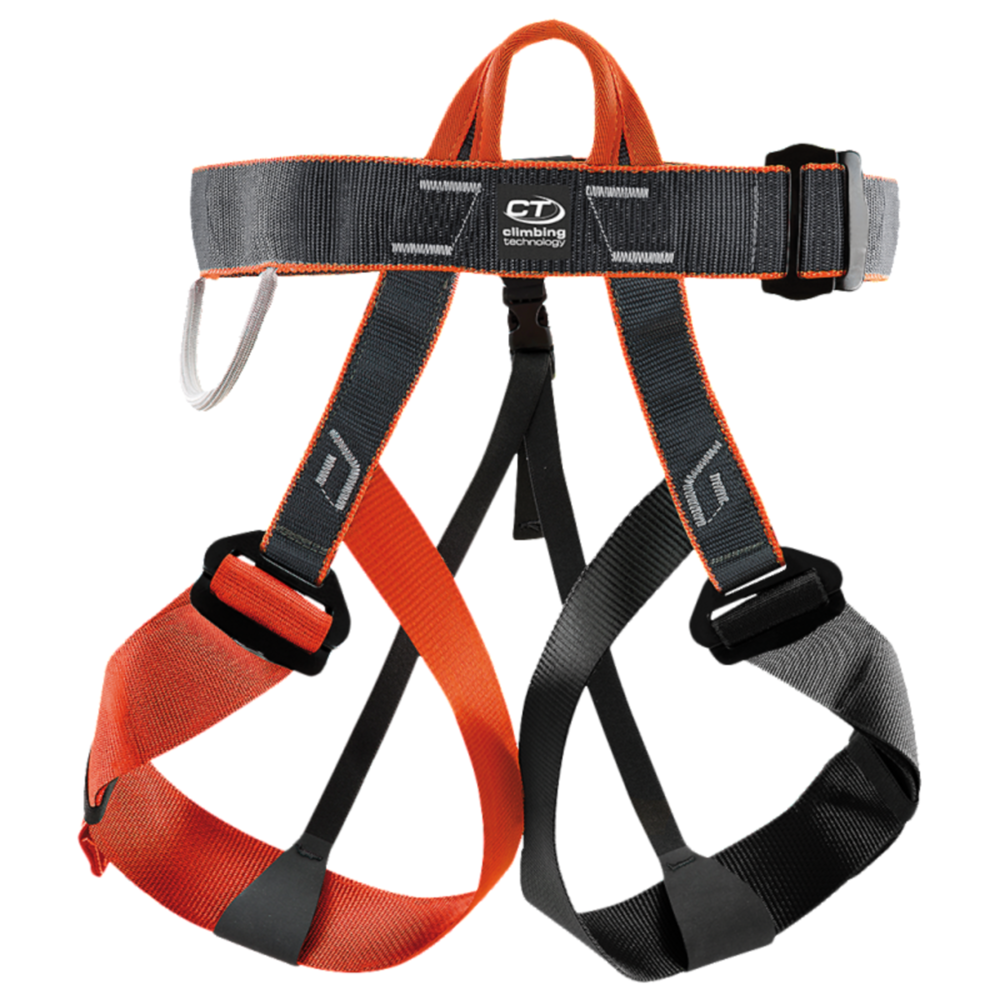
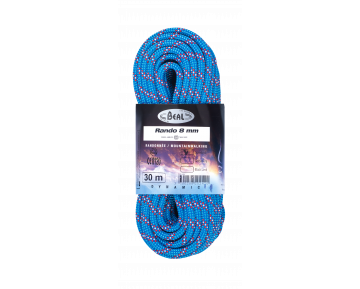
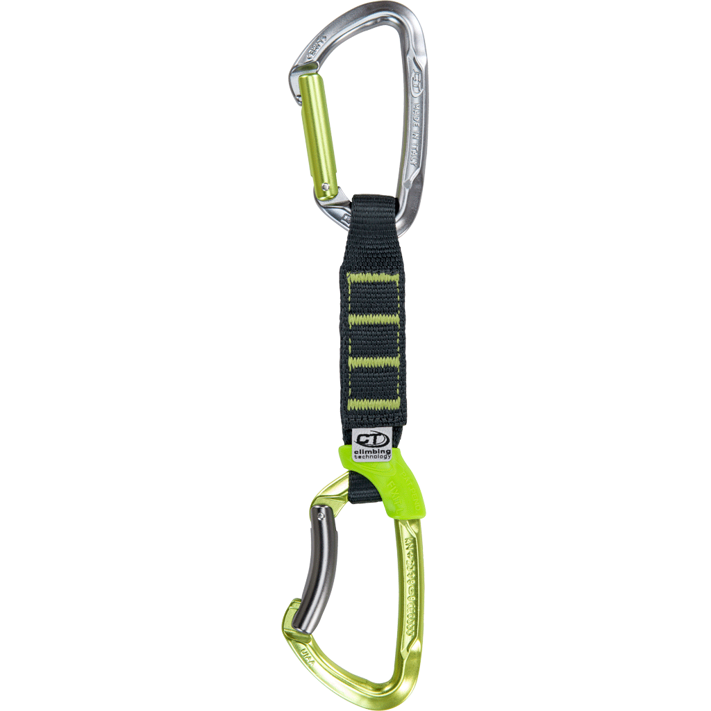
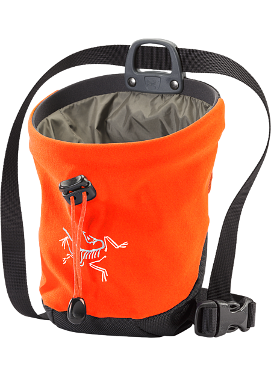

MATERIAL NECESARIO
-
Casco de escalada
-
Mosquetones
-
Aseguradores de escalada
-
Pies de gato
-
Arneses
-
Cuerdas de escalada
-
Cintas express
-
Bolsa de magnesio
-
Mochila de escalada
En entornos en los que tenga sentido usarlos, por ejemplo un cásco para escaladas cortas o para situaciones seguras en rocódromos no es necesario. Sin embargo es imprescindible en entornos donde haya roca ya que se puede desprender y caerte encima o puedas golpearte contra ella al caer.

Totalmente imprescindibles para anclar la cuerda a distintos enganches y a tu arnés. Necesarios en cualquier tipo de escalada con cuerda.
Elementos de seguridad que te permiten hacer rápel para bajar o frenar en caso de una caida en la que un segundo escalador esté en la base con el asegurador conectado a tu cuerda.
Zapatos especiales para escalada que, aunque no imprescindibles, son altamente recomendados ya que ayudan en gran medida a la escalada. Permiten pisar agarres muy estrechos y mayor sujeción. Deben estar tallados de forma muy justa y renovarse cada pocos meses para mayor eficiencia.
Otro elemento imprescindible para escalada con cuerda para engancharla a ti y permitir seguridad y sujeción.
Imprescindibles pero es necesario ajustar las dimensiones para cada persona y situación.
Necesarias para algunos tipos de escalada.
Muy útil para mayor fricción con las superficies y usada para cualquier tipo de escalada.
Muy útil pero opcional.